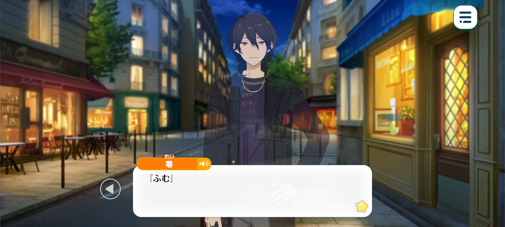
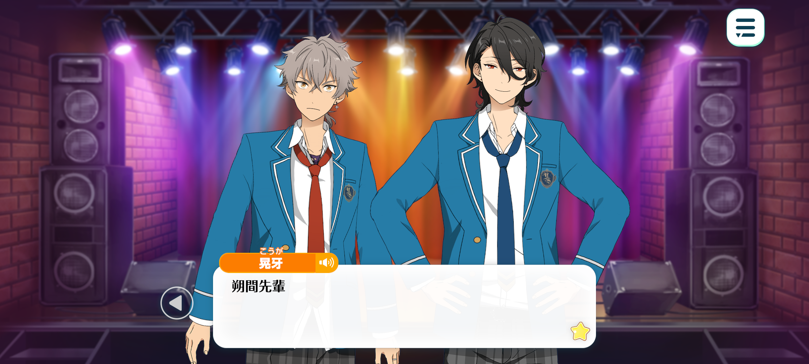
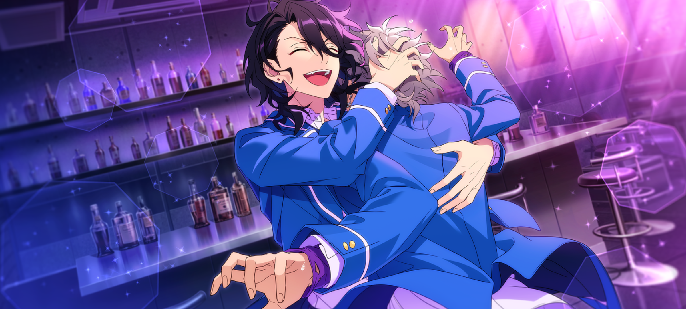

PSYCHOBREAK — Chapter 7


Time: That day, in the middle of the night. In a dream after taking the sleep medication

Rei: (Hmm.)
(Seems I have safely made my way into the world of dream once more.)
~...♪
(There's my former self, striding along with all the confidence you'd expect of me in those days. Full of youthful vigour, isn't he?)
(No... Perhaps he's merely putting on a brave face to hide his grief. It's rather painful to watch.)
(This is... Just as it happened in the past, it seems I'm wandering abroad.)
(I've left my troublesome homeland behind, a place steeped in sorrow, and now wander in search of something to amuse myself.)
(You won't find your bluebird of happiness that way, young man.)
(At any rate... According to the AIIE experiment manual, if I concentrate intently on a keyword I've chosen in advance—)
(Apparently, this allows me to exert some degree of influence over the dream I'm observing – or, more precisely, over my own self within that dream.)
(However, I can't move about freely as I would in a video game.)
(Still, it's a considerable improvement on simply standing by and watching.)
(I'm no longer merely a reader, watching the story unfold.)
(I am alive.)

Koga: ♪~♪~♪~
~...♪
Rei: —Yo~, Rei Sakuma-chan has returned.
Koga: Sakuma-senpai.
You- uh, I um uhhh.
Rei: W-what’s up? Your whole body’s twitchin’, you comin’ down with somethin’...?
Haha. You’re a weird kid, Wanko.
Koga: S-shut up… Don’t talk to me.
I was tryin’ really hard to stop myself from huggin’ you and going “waaha! Sakuma-senpai! WooOO!”

Rei: C’mon, no need to hold back. Good boy～....し♪
Koga: …eH!?
Rei: Goo~d boy, good good boy… You were lonely without me, weren’t ya? Sorry, Wanko.
Haha. When my little bro was small, I used t’hug him like this whenever he got lonely.
Koga: …! …! …!
G-get off me… You’re someone who everyone admires ‘n shines from afar, you don’t hafta be nice t’me.
I’ll get you dirty.
Rei: What are you talkin’ about, stuuupid. I can hug who I want when I want, yeah?
Now, wouldn't that be a pretty sad state of affairs?
Koga: …?
Rei: Anyway, my sixth sense kicked in. Or like, I got this weird feeling, as though something inside me, as though my own self, was tellin’ me to hurry.
So I came back to Japan as quickly as I could. So, what’s happenin’?
Were you able t’exterminate those “vampires”?
Well, personally, I don't really care either way.
Koga: Uh, nothin’s really changed…
They quietened down for a bit but then when you left, they startin’ actin’ all crazy again.
Now they’re back to non-stop complainin’. It’s fuckin’ annoying.
But don’t worry about it. Hasumi-senpai’s is using the Student Council to put school rules into place, and creatin’ an environment where people don’t feel the need to turn to doing shit like that.
That’s what I’ve heard but, I don’t really get that sort of stuff. Doesn’t seem like it’s makin’ much of a difference, anyway.
Rei: Right. Just ‘cos you put up a sign that says “Student Council says no!”, if you don’t respect their authority, you’re just gonna ignore it. Simple as.
Koga: So even a powerful spell card can't activate its effect under these conditions, huh?
Rei: Spell card? What are you on about?
Koga: Uh, um, it’s uh. I like card games. That’s all.
Rei: Yeah? Is it fun? Next time you got some free time, teach me how to play ♪
I’ve been so fuckin’ bored lately, I’ll take anythin’ at this point.
Koga: This isn’t the time for that… Sakuma-senpai, please do something. Glasses Guy alone just ain’t gonna cut it.
Rei: “Ain’t gonna cut it”? Haha, wish that was true.
Grow up big and strong, Bouzu. I hope you grow into someone so capable that the role you're given can't possibly contain your potential, so you’re someone who can be my playmate again...yeah?
Koga: …?